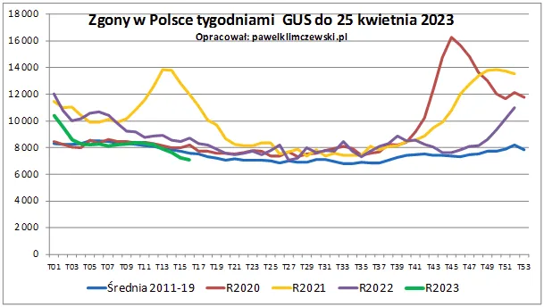

Częściowo limit zgonów na 2023 został wykonany przed terminem w latach poprzednich
GUS w rekordowym tempie zaczął publikować dane o zgonach, jest ich najmniej od lat. Spodziewałem się tej sytuacji znacznie wcześniej. To dane w ujęciu tygodniowym. Do 14. tygodnia (linia zielona) tego roku zgonów mamy poniżej średniej z ostatniej dekady z wyłączeniem lat 2020 i 2021. Jest to efekt "dna fali".

Jeśli mamy zjawisko cykliczne i spowodujemy podniesienie fali to potem fala musi opaść niżej, niż zwykle. Po tragedii lat 2020 i 21, w których odeszło ok. 200 tys. ludzi ponad normę obecnie mało jest tych, którzy odchodzą teraz. Jeśli nie wydarzy się nic złego, będziemy notowali taki niski poziom przez kolejne lata, ponieważ w poprzednich latach odeszli Ci, którzy powinni ciągle żyć.
Paweł Klimczewski